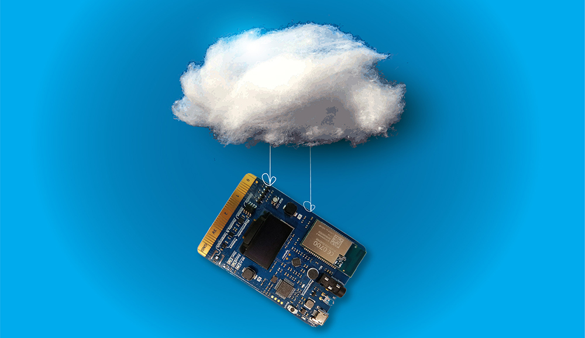
In this week's workshop you will create a Cosmos DB database and a serverless function of the type IoT Hub Trigger. The IoT Hub trigger function will be triggered to run anytime a message (data from the simulated devices app) is sent to your IoT Hub. Further to this, the IoT Hub trigger function will take the message payload (sensor data) and store it in your Cosmos DB database.
The workshop is in two parts:
Part 1 - Create a Cosmos DB to store temperature data from the simulated device app
Part 2 - Create a serverless function that is triggered whenever your IoT hub receives sensor data, and save it to your Cosmos DB database
For this part of the workshop you will create a new resource on Azure in the form of a Cosmos DB store. The database will store the temperature data sent from the simulated device app.
To get started login to your Azure account here using your university email credentials OR using your personal Microsoft email if you used the voucher code method. When logged in, click the Home button as shown below to ensure you are on the correct landing page:
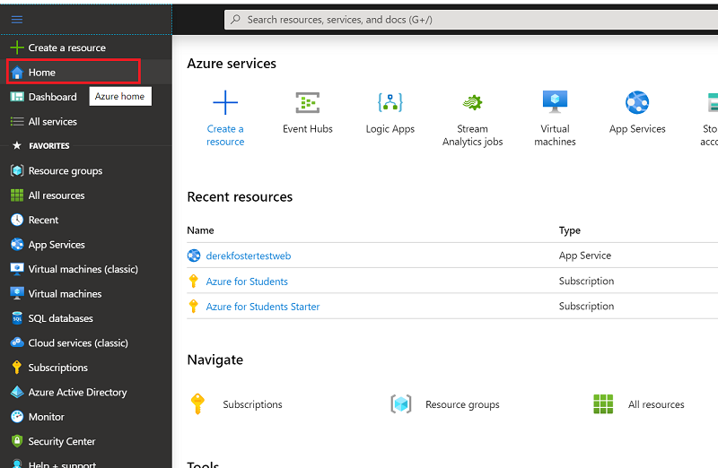
Next, follow the steps to create a new Cosmos DB by adding it to the resource group you created in workshop 3 - you should keep everything related to the module in the same resource group.
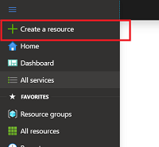
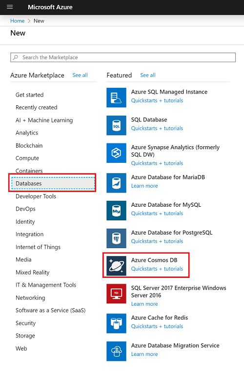
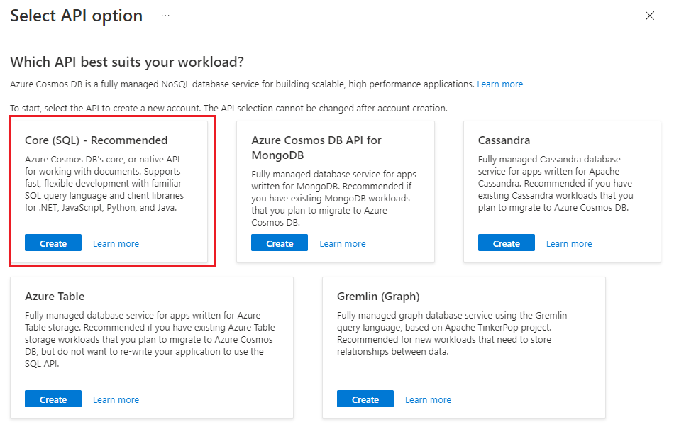
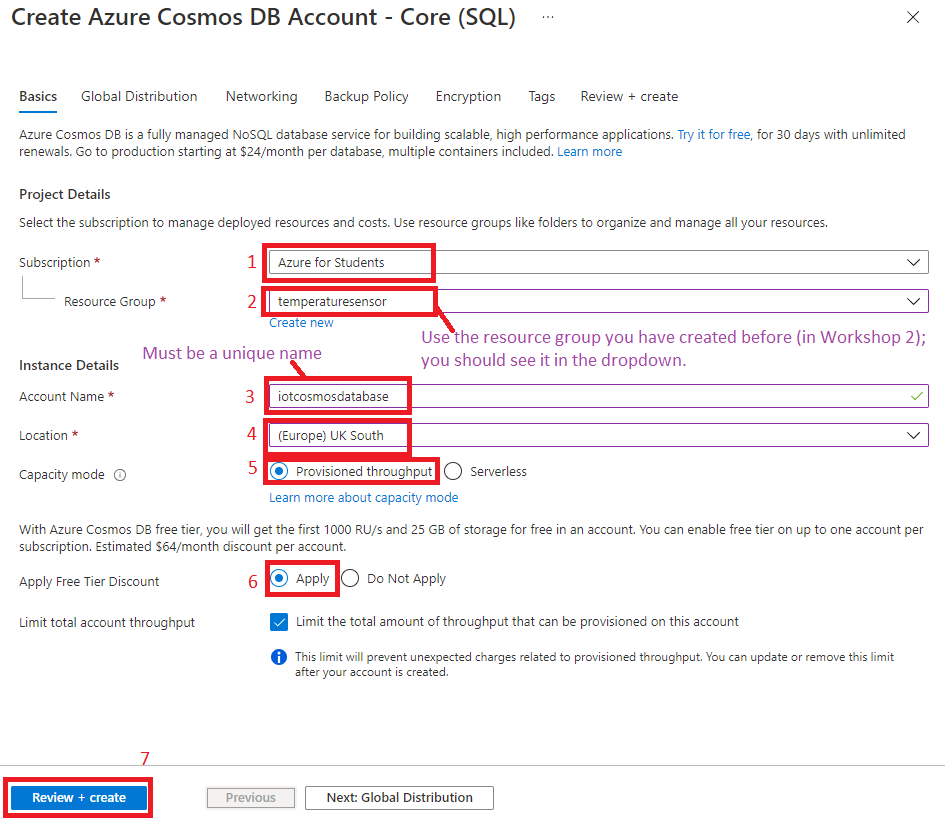
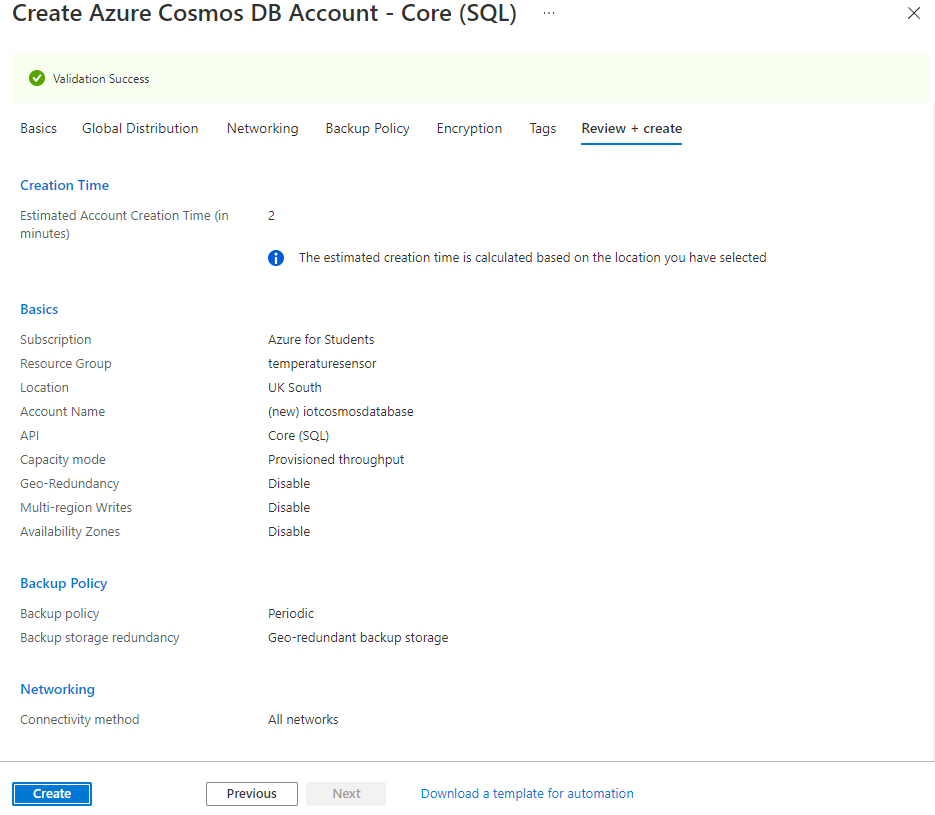
OK - you now have a Cosmos DB account that is deployed and configured for use with the SQL API. Wait until the 'Deployment is in progress' message is complete and the blue button name 'Go to resource' appears and click it.
Next, you will add a database and container (collection of items) that will be used to store the sensor data from the simulated device app::
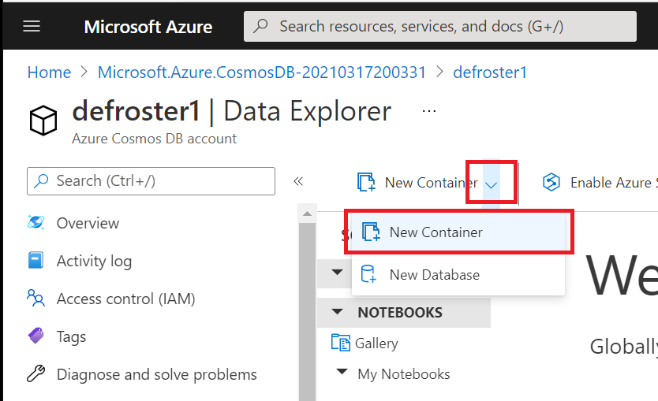
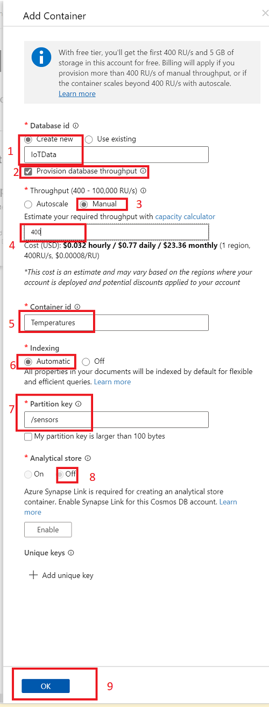
When fully deployed you will have a Cosmos datastore you can use to store data for the remainder of the module and your assessment work, do not delete this resource from your subscription.
Time for part 2!
In this part of the workshop, you will create an Azure Function app that contains an IoT Hub Trigger function. The trigger will process any sensor data that is sent to your IoT Hub from the simulated device app. Specifically, whenever your IoT hub receives data, the function will be triggered to run and save the data to the Cosmos datastore you created in part 1.
Start by opening VSC and follow the steps below to create an IoT Hub Trigger:
1. Open VSC
2. Select the Azure icon and then the Create Function button:
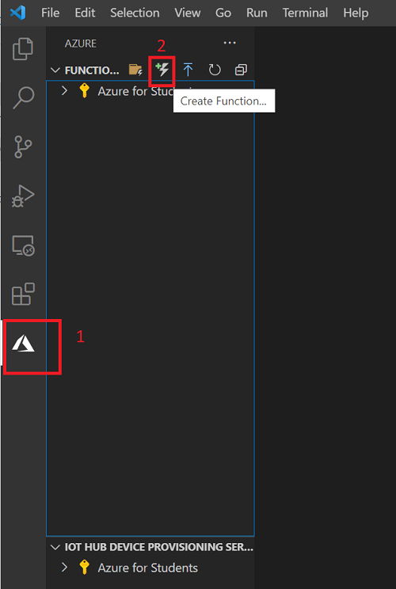
3. Click the 'Create new project' button and select or create a folder (give it a name such as "IoTHubTrigger") where the function files will be stored
4. Select a language: select C#
5. Select a template: select the IotHubTrigger template and give the function a name such as "myIoTHubTrigger"
6. Provide a namespace: This can be anything you like, for example my.uni
7. Select setting: Select the Create new local app setting
8. Select an event hub namespace: select Skip for now
9. Press enter for this step where the IoT hub endpoint name of messages/events is displayed
10. When this mesages is displayed: 'In order to debig, you must select a storage account......', click the 'Select storage account' button
11. Select the Create new storage account option and enter a unique name using only numbers and lowercase letters
12. Select a resource group for new resources: you should already have one created from when you create your Azure IoT hub from workshop 4, please select this one. My resource group was called temperaturesensor, yours may be something similar or the same
13. Select a location for new resources: select the location closest to you, in my case Is selected UK West
14. Select how you would like to open your project: select Add to workspace
Your IoTHubTrigger function app cloud services will be created as well as the source files you can begin to edit in VSC:
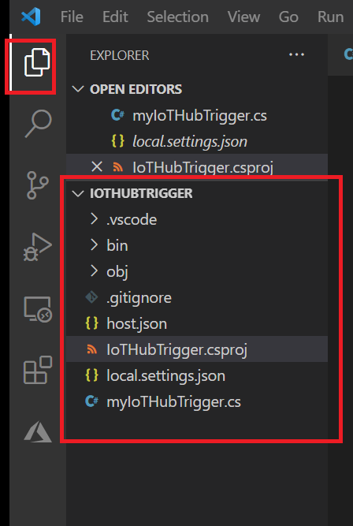
Now open the .csproj file that is part of your function, in the screenshot above it is called IoTHubTrigger.csproj. You are going to add packages to bring in more SDKs, for example for your trigger code to interact with Cosmos DB and Azure IoT Hub devices. Add the below lines to your .csproj file (remember your file names may be different):
<PackageReference Include="Microsoft.Azure.WebJobs.Extensions.CosmosDB" Version="3.0.10" />
<PackageReference Include="Microsoft.Azure.Devices" Version="1.30.0" />
A popup may appear in the bottom right asking if you want to restore the packages to download this new reference. Click Restore. If you don't see this popup, from the command palette (CTRL+SHIFT+P) select .NET: Restore All Projects.
Next, you will need to copy two connection strings from the Azure Portal. These are for hooking up your trigger code to your Azure IoT Hub and Cosmos DB database. Login to the portal here and from your IoT Hub (Home>All Resources) select your Iot Hub, and copy the 'Event hub compatanle endpoint' connection string and save to a text file:
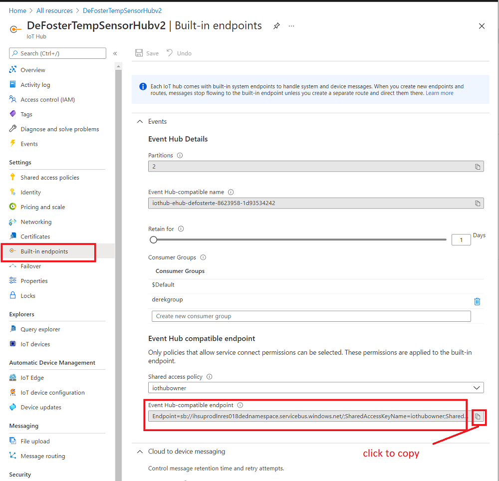
Now go to your Cosmos DB (Home>All Resources) and select your Cosmos DB. Follow the screenshot below and copy the primary connection string:
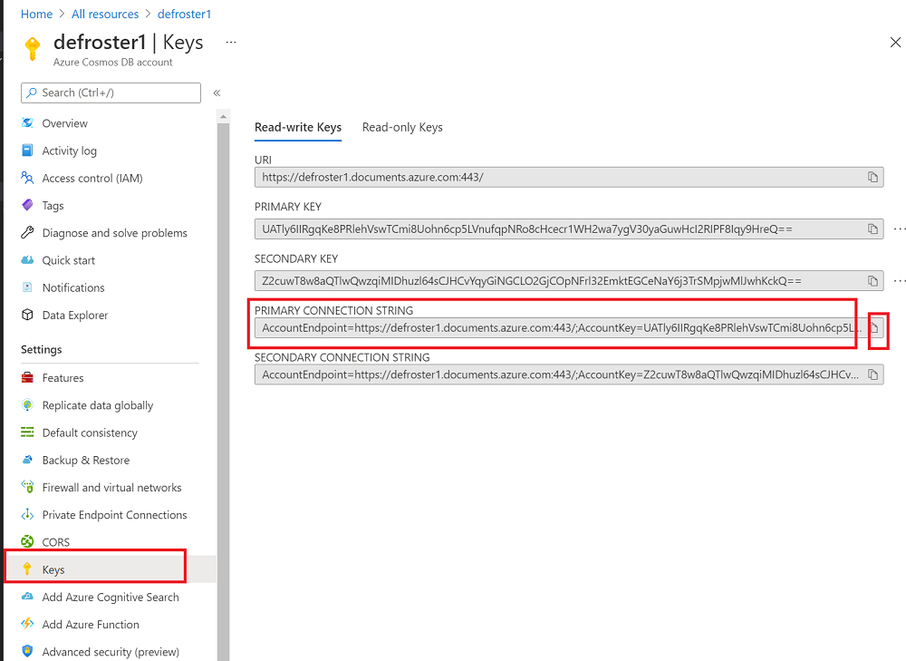
You should now have two connection strings, one for your IoT hub (event hub) and one for your Cosmos DB. Copy the code below and add your connection strings inside the correct set of quotes:
"AzureEventHubConnectionString": "your key here"
"cosmosDBConnectionString": "your jey here"
Next, open the local.settings.json file in VSC code and add your completed connection strings as shown below, you will need to add a few commas to separate the values:
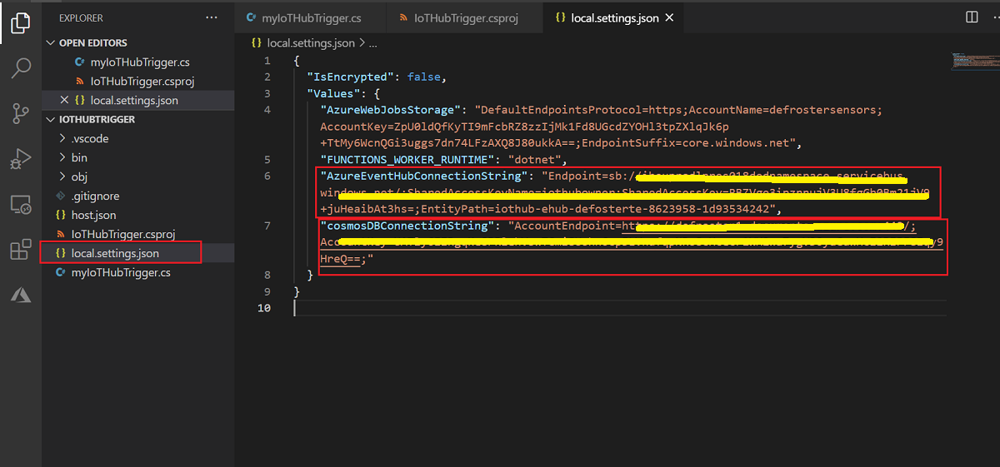
Now you will start to add the code logic for the trigger function. The purpose of your function is to trigger and run anytime sensor data is sent to your IoT hub. When it is triggered, the sensor data is parsed and saved to your Cosmos DB database that your created in part 1 of this workshop.
Open the myIoTHubTrigger.cs file (you may have named it differently):
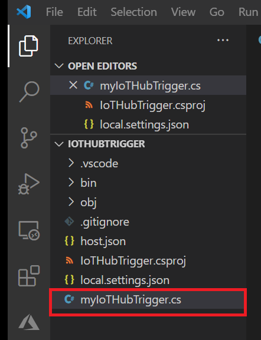
Add a new using directive to the top of the file, below the existing using directives:
using Newtonsoft.Json;
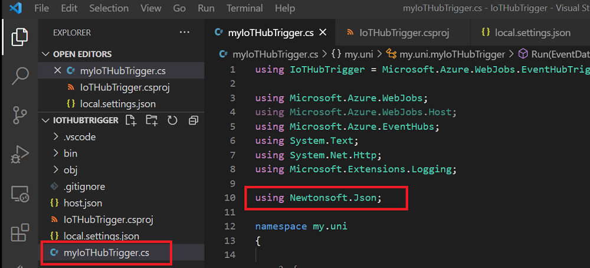
Declare a new class to hold the sensor data that will be saved into Cosmos DB. Add this code inside the namespace declaration, and before the public class IoTHUbTrigger1 class definition as shown below:
public class TemperatureItem
{
[JsonProperty("id")]
public string Id {get; set;}
public double Temperature {get; set;}
public double Humidity {get; set;}
}
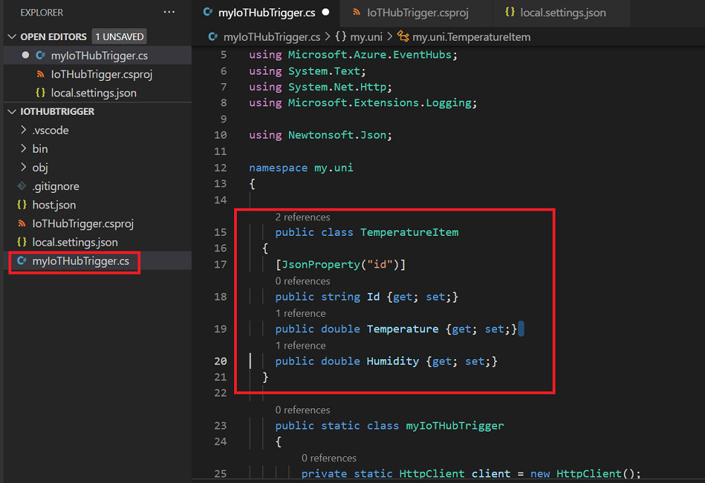
Replace the function code with the below, paying attention ro replacing the correct parts. Essentially you are wiring up your trigger function code to the Azure IoT hub and Cosmos DB. The log.information line of code at end will display the sensor data that arrives into the hub in the terminal window of VSC:
[FunctionName("myIoTHubTrigger")]
public static void Run([IoTHubTrigger("messages/events", Connection = "AzureEventHubConnectionString")] EventData message,
[CosmosDB(databaseName: "IoTData",
collectionName: "Temperatures",
ConnectionStringSetting = "cosmosDBConnectionString")] out TemperatureItem output,
ILogger log)
{
log.LogInformation($"C# IoT Hub trigger function processed a message: {Encoding.UTF8.GetString(message.Body.Array)}");
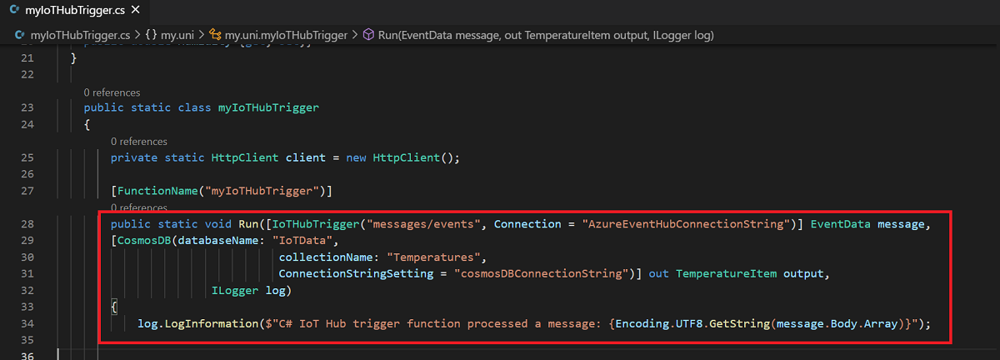
Under the main function run code, add the below code to deserialize the JSON passed in the body of the message and extract the temperature and humidity values that are sent from the simulated device app. The output parameter from your function is set to be a new TemperatureItem using the values from the message from the simulated device app. This will create a document and insert it into your Cosmos database collection. A new item is inserted everytime the simulated device app sends data.
var jsonBody = Encoding.UTF8.GetString(message.Body);
dynamic data = JsonConvert.DeserializeObject(jsonBody);
double temperature = data.temperature;
double humidity = data.humidity;
output = new TemperatureItem
{
Temperature = temperature,
Humidity = humidity
};
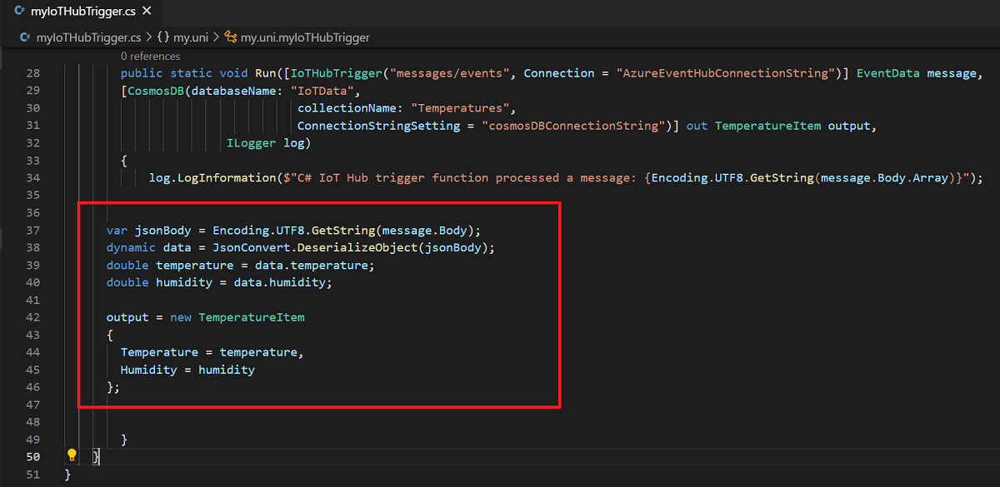
Now you can test your new IoT Hub trigger function! To do this hit F5 to start debugging and run the function locally, all going well your terminal window will be similar to below to show the function is running locally on your machine:
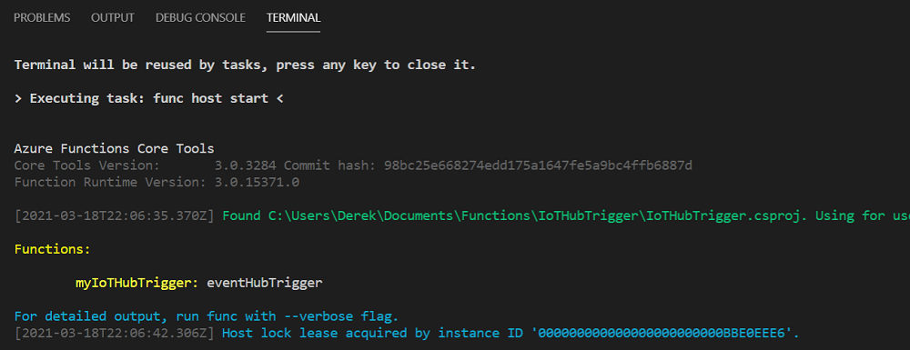
Now run the simulated device app (refer to workshop 3 for a refresher) to start sending data to your IoT Hub. When data is being sent your IoT Hub Trigger function will fire every time a message is received from the simulated device app as you can see below in VSC:
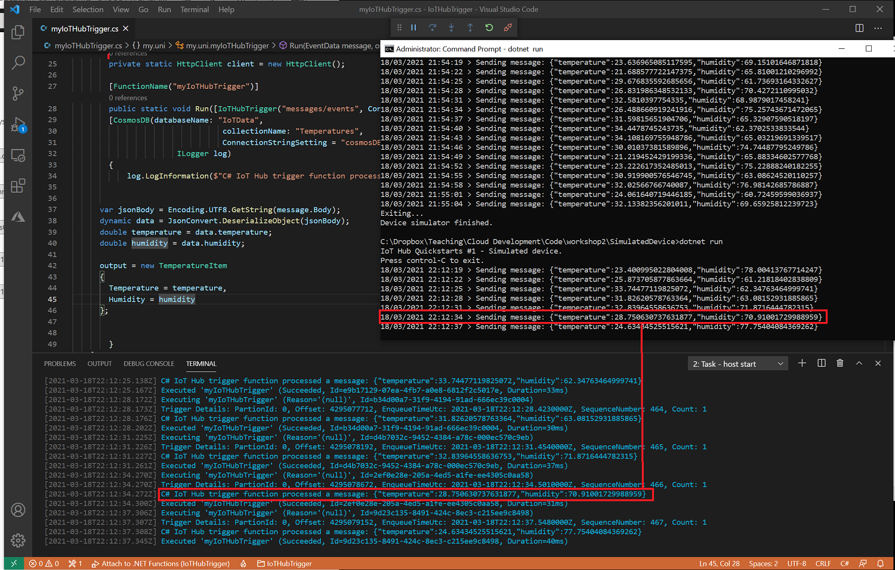
There are several ways you can explore the above sensor data that is saved in Cosmos DB. One way is to simply login to the Azure portal here using your student login details, and goint to Home>All Resources and selecting your Cosmos DB. Follow the steps below to view the sensor data that is stored in your Cosmos database from the simulated device app:
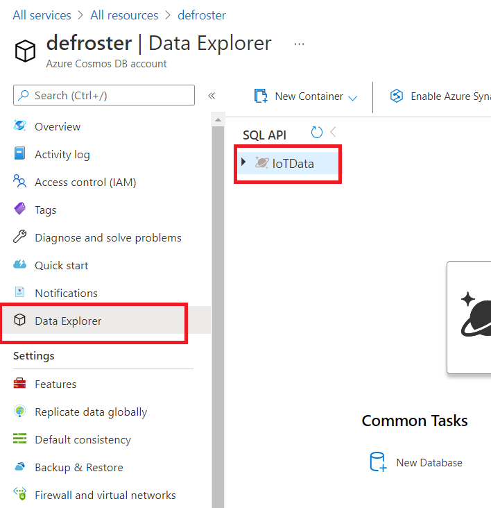
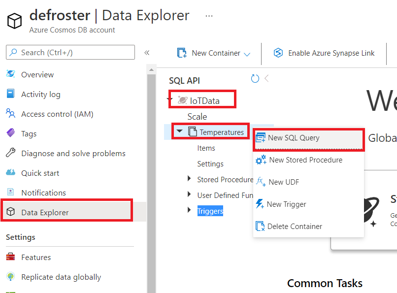
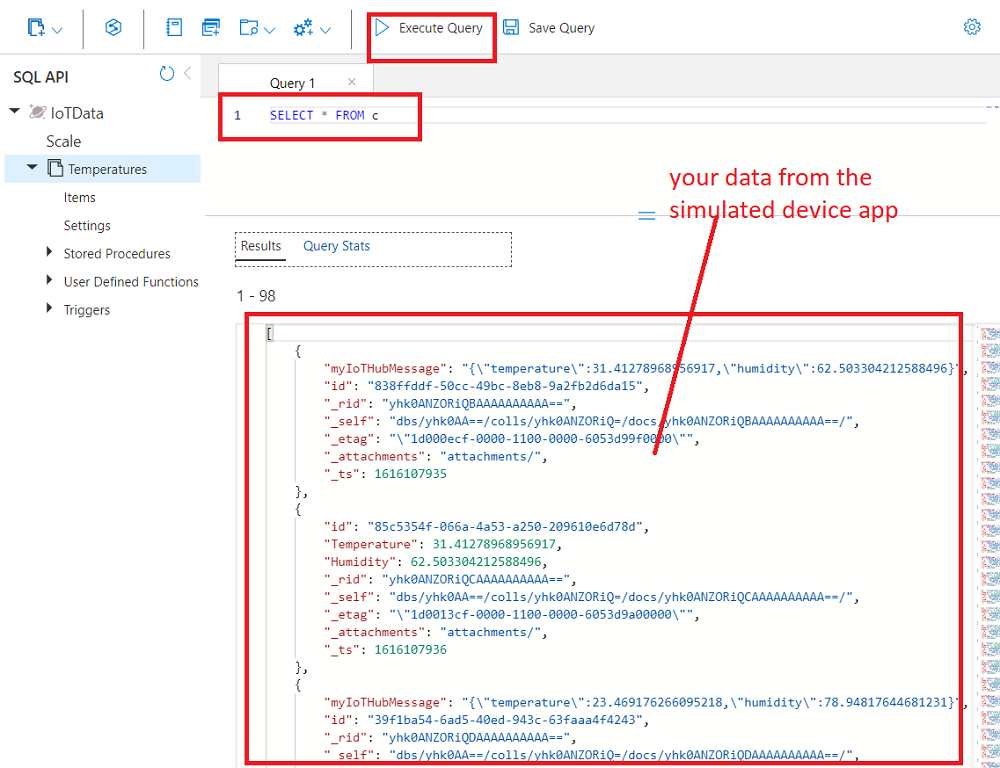
You now have an Iot Hub Trigger Function and Cosmos database setup. Please keep these resources and do not delete them from your Azure subscription as you will need them for future workshops as well as your assessment work.
Copy one of the data items from your Cosmos DB output, see above. An example is below:
{
"id": "85c5354f-066a-4a53-a250-209610e6d78d",
"Temperature": 31.41278968956917,
"Humidity": 62.503304212588496,
"_rid": "yhk0ANZORiQCAAAAAAAAAA==",
"_self": "dbs/yhk0AA==/colls/yhk0ANZORiQ=/docs/yhk0ANZORiQCAAAAAAAAAA==/",
"_etag": "\"1d0013cf-0000-1100-0000-6053d9a00000\"",
"_attachments": "attachments/",
"_ts": 1616107936
)
The above data item from Cosmos is already formatted as a JSON object, you can view this easier by using the online JSON viewer here by pasting it as below:
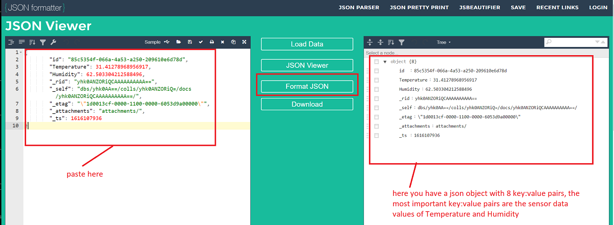
It is important to understand how JSON is formatted as you will need to parse JSON objects to display in a web app later in the module.
For this task, explore how you can modify the code in the myIoTHubTrigger.cs file so that a JSON array is saved to your Cosmos DB isntead of a JSON object. You can also place the JSON array inside an object.
It is also useful to understand the different types of bindings you can use with Azure Functions. Please read through the documentation here to learn more on these, with emphasis on trigger bindings.